Welcome
Welcome to Mudra SDK. This document enables creating your own unique experiences based on the Mudra Band™ and Mudra API. Here we will explain how to use the band as well as interface with your device. Our API includes language bindings for Java (Android) and C# (Unity Plugin). You can find links to a sample application for each of Android or Unity under the Sample Applications section.
Device Led Status
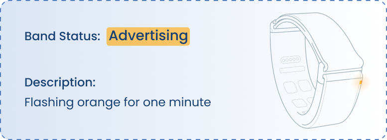 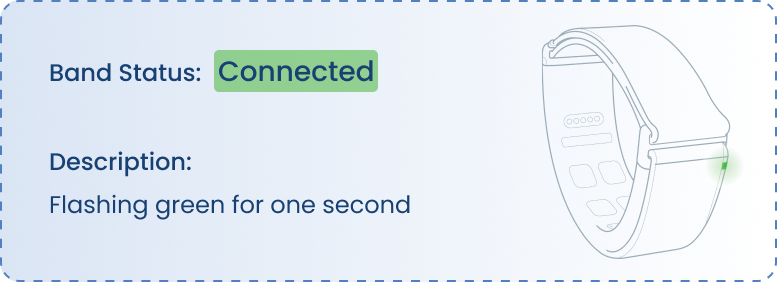 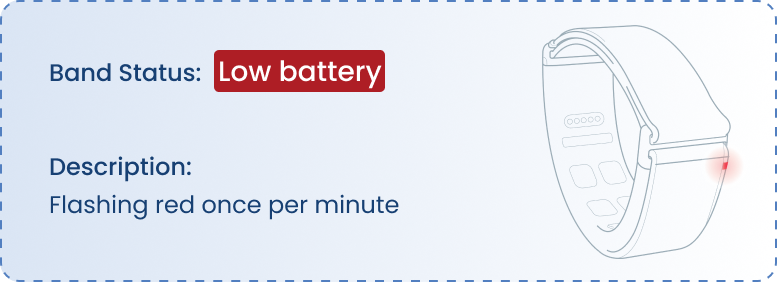 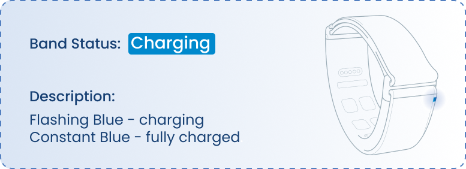 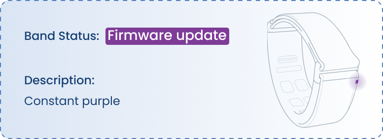
Wearing the band
To ensure you wear the wristband correctly, prease follow the instructions below:
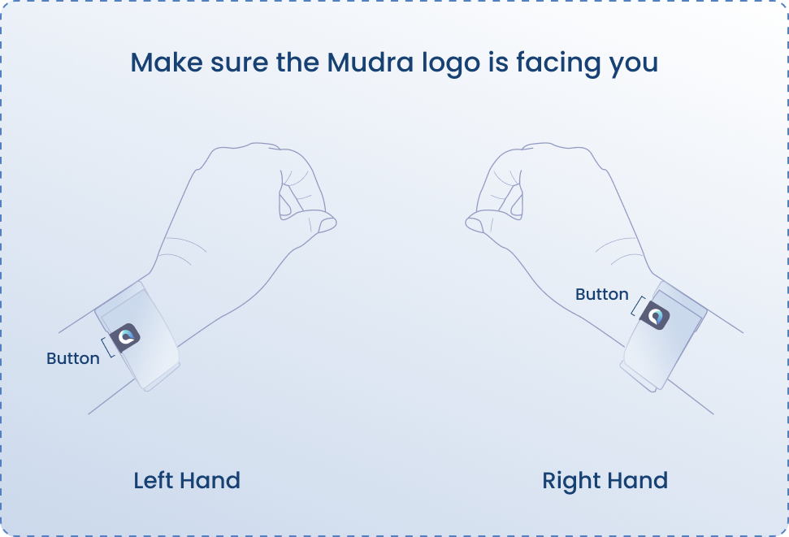
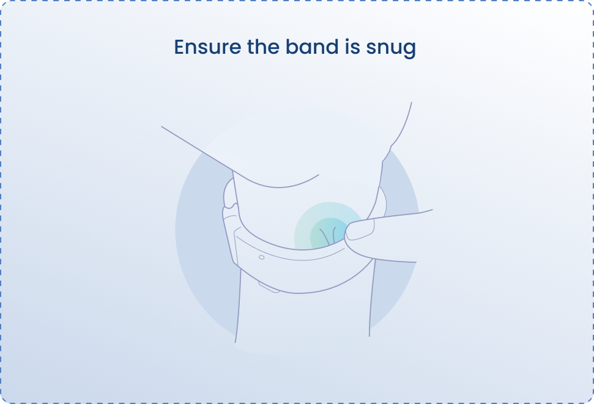
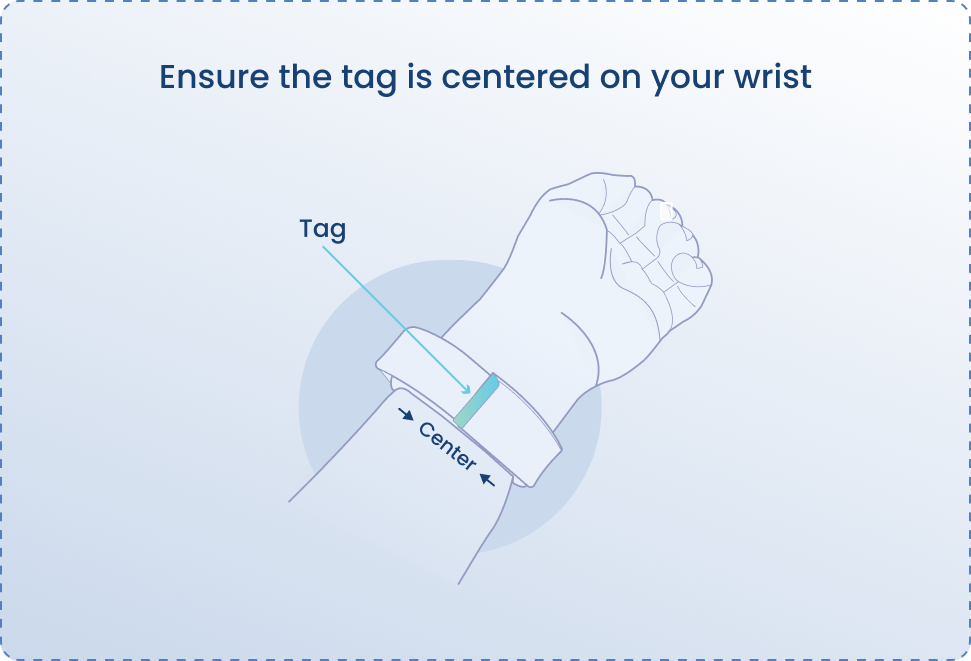
Access the API
Android
// build.gradle file:
dependencies {
.
.
.
// Mudra SDK:
//implement the .aar file.
implementation files(rootDir.absolutePath+'Path/MudraAndroidSDK.aar')
//Cloud support:
implementation 'io.reactivex.rxjava2:rxandroid:2.1.1'
implementation 'com.squareup.retrofit2:retrofit:2.9.0'
implementation 'com.squareup.retrofit2:adapter-rxjava2:2.9.0'
implementation 'com.squareup.retrofit2:converter-scalars:2.9.0'
implementation 'com.squareup.retrofit2:converter-gson:2.9.0'
implementation 'com.squareup.okhttp3:logging-interceptor:5.0.0-alpha.6'
// Bluetooth support:
implementation 'no.nordicsemi.android:ble:2.6.0'
implementation 'no.nordicsemi.android.support.v18:scanner:1.6.0'
}
// manifest file:
<uses-permission android:name="android.permission.BLUETOOTH" />
<uses-permission android:name="android.permission.BLUETOOTH_ADMIN" />
<uses-permission android:name="android.permission.ACCESS_FINE_LOCATION" />
<uses-permission android:name="android.permission.ACCESS_COARSE_LOCATION" />
- Download .AAR file from the link : https://github.com/wearable-devices/AndroidSDK
- Include this .AAR file inside project files.
- Implement the SDK to your project gradle.build file inside the dependencies:
- Add BLE permission to your project manifest.xml file:
Unity
Download package from the link : https://github.com/wearable-devices/MudraUnityPlugin
Open Window/Package Manager
Press on the plus button and select "Add package from disk"
Navigate to the location of the previously downloaded package and select the package.json file
Go to Mudra/Mudra Setup in the toolbar
The Mudra Plugin depends on the new Unity input system. Clicking 'Install' will install the new input system.
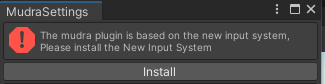
- The Mudra Unity Plugin currently does not support standalone builds. Please select either iOS or Android as your build target. You can use the dedicated buttons in the Mudra Setup window for this purpose.
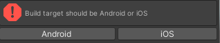
- If the chosen build target is Android, press the 'Fix' buttons to modify the relevant build settings.
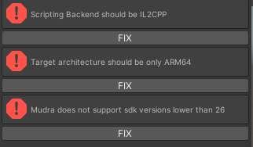
- Now, press 'EnableMudra' to activate all the MudraPlugin scripts.
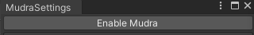
Licenses
Mudra.getInstance().getLicenseForEmailFromCloud("-----@------", (success, errorResult) -> {
if( success ) {
Log.d(TAG , "licenses set successfully.");
} else {
Log.d(TAG , "failed to set licenses : " + errorResult +".");
}
});
To utilize certain features of the SDK, a license is required.
- Open a new account on Mudra Developer Kit App.
- Contact Tom Yao at tom.y@wearabledevices.co.il to obtain licenses for using features in the SDK.
| License | Features |
|---|---|
| Main | Pressure, Gesture, Navigation, Hand Orientation, Air-Touch |
| RawData | SNC, IMU GYRO, IMU ACC |
Initialization and Connection
Android
- The Android SDK supports development with Java through the implementation of the MudraDelegate Interface. Note that the API supports multiple devices; when the 'device' parameter is received in the following functions, it refers to this specific device.
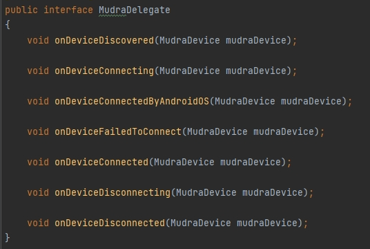
public class MainActivity extends AppCompatActivity {
private ActivityMainBinding binding;
@Override
protected void onCreate(Bundle savedInstanceState) {
super.onCreate(savedInstanceState);
binding = ActivityMainBinding.inflate(getLayoutInflater());
setContentView(binding.getRoot());
initializeMudra();
}
private void initializeMudra()
{
Mudra.getInstance().requestAccessPermissions(this);
Mudra.getInstance().getLicenseForEmailFromCloud("-----@------", (success, errorResult) -> {
if( success ) {
Log.d(TAG , "licenses set successfully.");
} else {
Log.d(TAG , "failed to set licenses : " + errorResult +".");
}
});
}
@Override
public boolean onCreateOptionsMenu(Menu menu) {
// Inflate the menu; this adds items to the action bar if it is present.
getMenuInflater().inflate(R.menu.menu_main, menu);
return true;
}
}
| Event | Description |
|---|---|
| public void onDeviceDiscovered(MudraDevice mudraDevice) | Called when a device is discoverd by the application. |
| public void onDeviceConnecting(MudraDevice mudraDevice) | Called when the Android device started connecting to given device. |
| public void onDeviceConnectedByAndroidOS(MudraDevice mudraDevice) | Called when the device has been connected. This does not mean that the application may start communication. Service discovery will be handled automatically after this call. |
| public void onDeviceFailedToConnect(MudraDevice mudraDevice) | Called when the device failed to connect. |
| public void onDeviceConnected(MudraDevice mudraDevice) | Called when a device is connected to the application. |
| public void onDeviceDisconnecting(MudraDevice mudraDevice) | Called when user initialized disconnection. |
| public void onDeviceDisconnected(MudraDevice mudraDevice) | Called when a device is disconnected by the application. |
Start by initializing Mudra environment and setting up the system inside the MainActivity:
- Mudra.getInstance().requestAccessPermissions(this);
- Mudra.getInstance().getLicenseForEmailFromCloud("-------@--------", (success, errorResult) -> { });
In order to connect, disconnect, scan, stop scanning and get paired devices for a device to the application :
| Description | Function |
|---|---|
| To connect a device call the connect function | mudraDevice.connect(Context context) |
| To disconnect a device call the disconnect function | mudraDevice.disconnect() |
| To scan for a Mudra device | Mudra.getInstance().scan(Context context); |
| To stop scaning for a Mudra device | Mudra.getInstance().stopScan(); |
| To get the paried Mudra devices to the OS | Mudra.getInstance().getBondedDevices(Context context); |
//--------------------------------------------------------------------------------------------------------------------
private void setMudraDelegate() {
Mudra.getInstance().setMudraDelegate(new MudraDelegate() {
@Override
public void onDeviceDiscovered(MudraDevice mudraDevice) {
}
@Override
public void onDeviceConnecting(MudraDevice mudraDevice) {
}
@Override
public void onDeviceConnectedByAndroidOS(MudraDevice mudraDevice) {
}
@Override
public void onDeviceFailedToConnect(MudraDevice mudraDevice) {
}
@Override
public void onDeviceConnected(MudraDevice mudraDevice) {
}
@Override
public void onDeviceDisconnecting(MudraDevice mudraDevice) {
}
@Override
public void onDeviceDisconnected(MudraDevice mudraDevice) {
}
});
}
- To listen to MudraDelegate callbacks you need to set the MudraDelegate by : Mudra.getInstance().setMudraDelegate(MudraDelegate mudraDelegate);
Unity
A MudraManager is required in the scene. To create one, go to Mudra/MudraManager in the toolbar.
When the SDK connects to the device, it will create a new device in the Unity input system. To receive input values, you need to set up both an input action asset and a script to listen to the messages. The plugin package includes and example.
These are all the input bindings for the MudraDevice. You can find them under 'Other/MudraDevice' when setting up a new action.
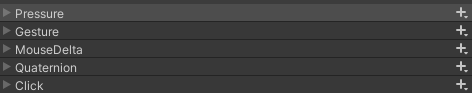
A fully functional scene with Mudra support will have a MudraManager and a way to read inputs from the input action asset
The MudraManager serves as your connection to the SDK.
The Mudra Manager also holds a few variables which can be set from the editor, these will be the settings that will be applied to the device after first connection.
The OnConnected and OnDissconnected Events will be called when a device has been connected/dissconnected (Look at Mudra Delegate), the parameter is the index of the device(currently only 1 device is supported)
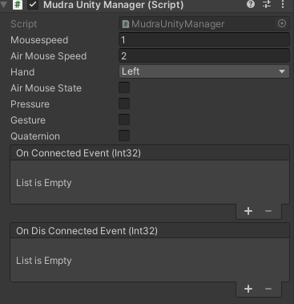
General
MudraDevice properties
mudraDevice.getBatteryLevel() // int, Returns the device's battery level.
mudraDevice.getFirmwareVersion() // String, Returns the device's firmware version, returns **empty string** in case there is no firmware version.
mudraDevice.getSerialNumber() // long, Returns the device's the device's serial number, or **0** in case there is no serial number.
mudraDevice.getDeviceNumberByName() // String, Returns the device's band number, or **0** in case there is no band number.
Once you have acquired the MudraDevice, you can request additional information from the device by accessing the following properties:
- BatteryLevel
- FirmwareVersion
- SerialNumber
- DeviceNumber
MudraDevice firmware status
// Check if navigation feature is enabled
boolean isNavigationEnabled = mudraDevice.getFirmwareStatus().isNavigationEnabled();
// Check if gesture feature is enabled
boolean isGestureEnabled = mudraDevice.getFirmwareStatus().isGestureEnabled();
// Check if pressure feature is enabled
boolean isPressureEnabled = mudraDevice.getFirmwareStatus().isPressureEnabled();
// Check if SNC (Surface Nerve Conductance) feature is enabled
boolean isSncEnabled = mudraDevice.getFirmwareStatus().isSncEnabled();
// Check if accelerometer feature is enabled
boolean isAccEnabled = mudraDevice.getFirmwareStatus().isAccEnabled();
// Check if gyroscope feature is enabled
boolean isGyroEnabled = mudraDevice.getFirmwareStatus().isGyroEnabled();
// Check if quaternion feature is enabled
boolean isQuaternionEnabled = mudraDevice.getFirmwareStatus().isQuaternionEnabled();
// Check if firmware sends navigation delta X and delta Y to the app on movement
boolean isSendsToAppEnabled = mudraDevice.getFirmwareStatus().isSendsNavigationToAppEnabled();
// Check if firmware sends navigation delta X and delta Y to the HID (Human Interface Device)
boolean isSendsToNavigationHIDEnabled = mudraDevice.getFirmwareStatus().isSendsNavigationToHIDEnabled();
// Check if firmware sends mouse click and release on gesture to the HID
boolean isSendsToGestureHIDEnabled = mudraDevice.getFirmwareStatus().isSendsGestureToHIDEnabled();
// Check if Air-Touch feature is enabled
boolean isAirTouchEnabled = mudraDevice.getFirmwareStatus().isAirTouchEnabled();
// Request the firmware to send its status
mudraDevice.requestForFirmwareStatus();
// Set a callback to be executed each time the firmware status changes
mudraDevice.setOnFirmwareStatusChanged(new OnFirmwareStatusChanged() {
@Override
public void run(boolean updated) {
// Implement callback logic here
}
});
The firmware status indicates the current status of the firmware.
General Events
mudraDevice.setOnChargingStatusChange(new OnChargingStatusChanged() {
@Override
public void run(boolean isCharging) {
}
});
mudraDevice.setOnBatteryLevelChanged(new OnBatteryLevelChanged() {
@Override
public void run(int batteryLevel) {
}
});
Once you have obtained the MudraDevice, you can register to receive notifications for various events that occur on the device:
Charging State Change: This event is triggered whenever the MudraDevice is connected to or disconnected from the charger.
Battery Level Change: This event occurs whenever there is a change in the battery level.
Set Hand
//To set hand
mudraDevice.setHand(HandType.RIGHT);
mudraDevice.setHand(HandType.LEFT);
//To set hand
mudraManager.SetHand(HandType.RIGHT, 0);
mudraManager.SetHand(HandType.LEFT, 0);
When the device is connected, you need to update its settings via the API depending on whether you wear the band on your left or right hand.
Sensors
SNC
//To enable register, for the callback.
mudraDevice.setOnSncReady(new OnSncReady() {
@Override
public void run(long timestamp, float[] data) {
}
});
//To disable put null.
mudraDevice.setOnSncReady(null)
//To check if the callback is set.
mudraDevice.isOnSncCallbackSet(); // returns true in case the callback is set, false otherwise.
- Requirements :
- License - RawData
Functionality for exposing raw SNC (Surface Nerve Conductance) sensor values. This function may incur an additional fee (We will send a license with instructions for those who are interested in this functionality).
Gyroscope
//To enable register, for the callback.
mudraDevice.setOnImuGyroReady(new OnImuGyroReady() {
@Override
public void run(long timestamp, float[] data) {
}
});
//To disable put null.
mudraDevice.setOnImuGyroReady(null)
//To check if the callback is set.
mudraDevice.isOnImuGyroCallbackSet(); // returns true in case the callback is set, false otherwise.
- Requirements :
- License - RawData
Functionality for exposing raw GYRO (Gyroscope) sensor values. This function may incur an additional fee (We will send a license with instructions for those who are interested in this functionality).
Accelerometer
//To enable register, for the callback.
mudraDevice.setOnImuAccRawReady(new OnImuGyroReady() {
@Override
public void run(long timestamp, float[] data) {
}
});
//To disable put null.
mudraDevice.setOnImuAccRawReady(null)
//To check if the callback is set.
mudraDevice.isOnImuAccRawCallbackSet(); // returns true in case the callback is set, false otherwise.
- Requirements :
- License - RawData
Functionality for exposing raw ACC (Accelerometer Characterization Capability) sensor values. This function may incur an additional fee (We will send a license with instructions for those who are interested in this functionality).
Features
Pressure Level
//To enable register, for the callback.
mudraDevice.setOnPressureReady(new OnPressureReady() {
@Override
public void run(float pressure) {
}
});
//To disable put null.
mudraDevice.setOnPressureReady(null)
//To check if the callback is set.
mudraDevice.isOnPressureReadySet(); // returns true in case the callback is set, false otherwise.
//To enable pressure in device number 0
mudraManager.SetPressureState(true, 0);
//To disable pressure in device number 0
mudraManager.SetPressureState(false, 0);
- Requirements :
- License - Main
To estimate the amount of the fingertip pressure, use the described API.
The returned pressure parameter indicates 1.0 for maximum pressure and 0.0 fir the minimum pressure.
Gesture Recognition
// Enable discrete gestures
mudraDevice.setOnGestureReady(new OnGestureReady() {
@Override
public void run(GestureType gestureType) {
// Callback executed when a discrete gesture is detected
}
});
// Disable discrete gestures
mudraDevice.setOnGestureReady(null);
// Enable continuous gestures
mudraDevice.setOnButtonChanged(new OnButtonChanged() {
@Override
public void run(AirMouseCommand airMouseCommand) {
// buttonEvent == AirMouseCommand.Release for release event
// buttonEvent == AirMouseCommand.Press for press event
}
});
// Disable continuous gestures
mudraDevice.setOnButtonChanged(null);
// Enable sending HID commands "Mouse Left Button Press" and "Mouse Left Button Release"
// by setting sending to Firmware Target GESTURE_TO_HID.
mudraDevice.setFirmwareTarget(FirmwareTarget.GESTURE_TO_HID, true); // Enable sending through HID
mudraDevice.setFirmwareTarget(FirmwareTarget.GESTURE_TO_HID, false); // Disable sending through HID
//To enable gesture in device number 0
mudraManager.SetGestureState(true, 0);
//To disable gesture in device number 0
mudraManager.SetGestureState(false, 0);
//Enable sending HID commands "Mouse Left Button Press" and "Mouse Left Button Release"
// by setting sending to Firmware Target GESTURE_TO_HID.
mudraManager.SetFirmwareTarget(FirmwareTarget.GESTURE_TO_HID, true, 0); // Enable sending through HID
mudraManager.SetFirmwareTarget(FirmwareTarget.GESTURE_TO_HID, false, 0); // Disable sending through HID
- Requirements :
- License - Main
The SDK provides comprehensive gesture detection capabilities for both discrete and continuous gestures, enhancing interaction and control with the wristband.
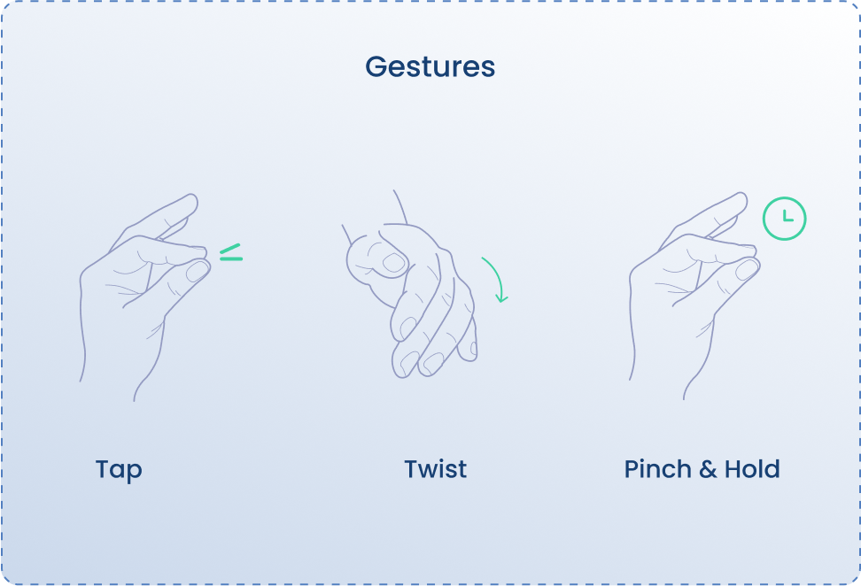
- Discrete Gestures: are single actions that are immediately recognizable and have distinct start and end points. The SDK detects the following discrete gestures:
- Tap: A quick thumb and index tap.
- Double Tap.
- Twist: A rapid back-and-forth rotation of the wrist.
- Double Twist.
- Continuous Gestures: involve sustained interaction over a period of time, where the gesture is active until a specific condition is met, such as releasing the fingers
- Press: This gesture involves pressing with both the thumb and index finger.
- Release: Both fingers are released.
Navigation
// To enable navigation:\
mudraDevice.setOnNavigationReady(new OnNavigationReady() {
@Override
public void run(int delta_x, int delta_y) {
// Callback executed when receiving Delta_x and Delta_y
// In case enabled: mudraDevice.setFirmwareTarget(FirmwareTarget.NAVIGATION_TO_APP, true);
}
@Override
public void run(Direction direction) {
// Callback executed when receiving direction movement : UP, DOWN, RIGHT, LEFT
// In case enabled: mudraDevice.setFirmwareTarget(FirmwareTarget.NAVIGATION_TO_APP, true);
}
});
// To disable navigation:
mudraDevice.setOnNavigationReady(null);
// Developer can control where to send the navigation Delta_x and Delta_y:
mudraDevice.setFirmwareTarget(FirmwareTarget.NAVIGATION_TO_HID, true); // Enable sending Delta_x and Delta_y through HID
mudraDevice.setFirmwareTarget(FirmwareTarget.NAVIGATION_TO_HID, false); // Disable sending Delta_x and Delta_y through HID
mudraDevice.setFirmwareTarget(FirmwareTarget.NAVIGATION_TO_APP, true); // Enable sending Delta_x and Delta_y to the app as a callback
mudraDevice.setFirmwareTarget(FirmwareTarget.NAVIGATION_TO_APP, false); // Disable sending Delta_x and Delta_y to the app as a callback
//To enable navigation in device number 0
mudraManager.SetNavigationState(true, 0);
//To disable navigation in device number 0
mudraManager.SetNavigationState(false, 0);
// Developer can control where to send the navigation Delta_x and Delta_y:
mudraManager.SetFirmwareTarget(FirmwareTarget.NAVIGATION_TO_HID, true, 0); // Enable sending Delta_x and Delta_y through HID
mudraManager.SetFirmwareTarget(FirmwareTarget.NAVIGATION_TO_HID, false, 0); // Disable sending Delta_x and Delta_y through HID
mudraManager.SetFirmwareTarget(FirmwareTarget.NAVIGATION_TO_APP, true, 0); // Enable sending Delta_x and Delta_y to the app as a callback
mudraManager.SetFirmwareTarget(FirmwareTarget.NAVIGATION_TO_APP, false, 0); // Disable sending Delta_x and Delta_y to the app as a callback
- Requirements :
- License - Main
Navigation feature provides either delta x and y or direction movements (UP, DOWN, RIGHT, LEFT), and allows developers to control where these inputs are sent (either to HID or directly to the application).
Hand Orientation
//To enable
mudraDevice.setOnImuQuaternionReady(new OnImuQuaternionReady() {
@Override
public void run(long l, float[] floats) {
//floats[0] -> W
//floats[1] -> X
//floats[2] -> Y
//floats[3] -> Z
}
});
//To disable
mudraDevice.setOnImuQuaternionReady(null);
//To enable quaternion in device number 0
mudraManager.SetQuaternionState(true, 0);
//To disable quaternion in device number 0
mudraManager.SetQuaternionState(false, 0);
- Requirements :
- License - Main
Report the orientation of the wristband in terms of quaternions. Quaternions are a mathematical representation that describes the orientation of an object in 3D space. Each quaternion is represented by four components: qw,qx,qy,qz. These components collectively describe the rotation of the wristband relative to a reference orientation.
Experiences
Air-Touch
mudraDevice.setAirTouchActive(true); // To activate Air-Touch
mudraDevice.setAirTouchActive(false); // To deactivate Air-Touch
//In order to change mode
mudraDevice.setDeviceMode(DeviceMode.IPHONE);
mudraDevice.setDeviceMode(DeviceMode.MAC);
mudraDevice.setDeviceMode(DeviceMode.APPLE_TV);
mudraDevice.setDeviceMode(DeviceMode.IPAD);
mudraDevice.setDeviceMode(DeviceMode.ANDROID);
mudraManager.SetDeviceMode(DeviceMode.IPHONE, 0);
mudraManager.SetDeviceMode(DeviceMode.MAC, 0);
mudraManager.SetDeviceMode(DeviceMode.APPLE_TV, 0);
mudraManager.SetDeviceMode(DeviceMode.IPAD, 0);
mudraManager.SetDeviceMode(DeviceMode.ANDROID, 0);
- Requirements :
- License - Main
When the Air-Touch is enabled, the device starts to simulate mouse/keyboard/media actions like clicks or movements. The device then sends the clicks and movement to any operating system using the HID (Human Interface Device) protocol.
| Air-Touch Mode | Navigation | Gesture | HID Command | HID Profile |
|---|---|---|---|---|
| iPhone(iOS) | Pointer | Press Release Twist |
Left Button Press Left Button Release Home |
Mouse Mouse Keyboard |
| MAC(macOS) | Pointer | Press Release Twist |
Left Button Press Left Button Release App Manager |
Mouse Mouse Keyboard |
| AppleTV(tvOS) | DPad | Double Tap Twist Double Twist |
Select Back App Manager |
Media Keyboard Keyboard |
| iPad(iPadOS) | Pointer | Press Release Twist |
Left Button Press Left Button Release Home |
Mouse Mouse Keyboard |
| Android | Pointer | Press Release Twist Double Twist |
Left Button Press Left Button Release Home App Manager |
Mouse Mouse Keyboard Keyboard |
Troubleshooting
| Problem | OS | Solution |
|---|---|---|
| Mudra does not connect to host device | Android | Check your Bluetooth version, we support only 4.2 and above. |
| Mudra does not connect to host device | All | Check if your device's LED flashes red, if so recharge (LED will flash blue) |
| Mudra gestures or pressure are not correctly recognize | All | Make sure that the electrodes are in contact with your skin. 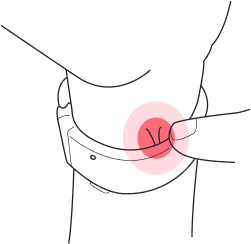 |
| Missing dll error | Unity | Make sure installation created an environment variable path and unpacked the dlls inside. If not, try running Setup.msi as administrator |
Please contact support@mudra-band.com for any additional questions or suggestions.